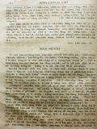
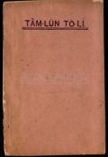

Languages
台文
｜
中文
｜
日本語
｜
English
字體
小
｜
中
｜
大
首頁
/
白話字數位典藏
白話字數位典藏全文檢索
查詢模式
選擇年代
清國時代(1885-1895)
日本時代(1895-1945)
戰後(1945-1969)
1885-1895
1896-1905
1906-1915
1916-1925
1926-1935
1936-1945
1946-1955
1956-1965
1966-1969
1970-1980
1980-1990
1990-2000
2000-2010
2010-
選擇文類
詩
散文
小說
戲劇
傳記
選擇作者
陳清忠
陳清義
編輯部
柯設偕
吳天命
明有德
偕叡廉
周天來
劉華義
王守勇
林茂生
陳添旺
王占魁
柯維思
賴仁聲
陳瓊琚
雪峰逸嵐
吳清鎰
郭水龍
蕭樂善
許水露
葉金木
陳金然
章王由
廖得
鄭連坤
潘道榮
楊士養
梁秀德
劉約翰
周淑慧
高金聲
林燕臣
黃六點
蔡愛義
許有才
主筆
巴克禮
陳鳩水
郭朝成
張基全
陳明清
陳能通
拾穗生
顏振聲
卓恆利
傳道局
胡文池
劉主安
鄭兒玉
梅監務
文姑娘
Google Search
Yahoo Search
全部
刊名
標題
標題(教羅)
全文
全文(教羅)
作者
第7頁，共13頁(共246筆資料) 0.63199400901794sec
1
...
5
6
7
8
9
...
13
To Page
GO
文字列表
圖文列表
排序
日期
文類
刊名
作者
影像
[1916-2 台灣教會報 文類-散文 作者-陳添旺/Tân Thiam-ōng]
假的先生 [ Ké ê Sian-siⁿ ]
假的先生。 1916.2 no.371 pp.5-6 舊年8月有2人來附近做醫生。一人講是蘭醫生的學生，一人講是蘭醫生的學生，一人講是馬偕醫院的先生，歇熱出來賣藥施濟佈道，實在騙人錢真濟。後來有警官去調查就去別位。到12月就去近大甲水尾莊賣藥，就換款；一个講是蘭醫生的學生，一个講是墎仔跤的傳道做紹介人。按呢實在有損害的所在。近來這款藉名的人真濟，所以愛寫幾字上報，予大家知通張持，毋通予人騙去，也免奇怪醫生傳道咧騙人。若有世俗嫌，就通共in說明，這是真要緊。 (陳添旺記)。...
[1925-10 芥菜子 文類-散文 作者-陳清義/Tân Chheng-gī]
(3)
論祈禱Ê要緊 [ LŪN KÎ-TÓ Ê IÀU-KÍN ]
論祈禱Ê要緊 人佇這世間，有身軀，有靈魂，兩項平平要緊。這個是咱信者所應該知--ê。身軀所著欠ê，就是食、穿、踮；這3項以外，猶有一項koh khah要緊--ê，就是空氣。這个空氣kap人生有大關係，拄拄親像水kap魚ê關係按呢！魚離水就死，人離開空氣也是按呢；這個;這個是人人所知影--ê.靈魂所著欠ê，就是上帝ê話，就是道，道，就是耶穌；按呢thang知耶穌kap咱人有關係。空氣會養飼人ê身軀，hō͘呼吸來thong到肺腑。耶穌會養飼人ê靈魂，予人倚靠伊來祈禱，...
[1925-7 芥菜子 文類-散文 作者-陳清義/Tân Chheng-gī]
(2)
東台灣Ê故典 [ TANG TÂI-OÂN Ê KÒ͘-TIÁN ]
東台灣Ê故典 佇教會內欲揀人當職，著真細膩。會友若有囝兒欲號名，也著真斟酌。這擺我kap郭希信、郭水龍、鐘天枝3位牧師去花蓮港赴奮興會，有聽著幾若項ê故典，不止心適；taⁿ來寫佇下底報予大家知影。 1. 王長老抽籤。佇某所在有一個長老姓王，伊ê家內有拄著破病，食藥、祈禱攏袂好；就去宮廟欲抽籤。有某傳道師知影就去問伊，「你kiám毋是王長老？」「是lah，我是bóng抽若定，我to無信。」 2. 偕牧師做小使。有一個姓偕，伊ê名號做牧師teh kā人提物，做小使。有一日，一个人teh問伊&ec...
[1925-7 芥菜子 文類-散文 作者-陳清義/Tân Chheng-gī]
(3)
南勢番 [ LÂM SÌ HOAN ]
南勢番 這擺我去花蓮港赴奮興會，順機會我研究南勢番ê狀況，不止有趣味，taⁿ來排列寫佇下底，報予大家知影。 1. 論in ê祖先。In逐ê攏講毋知影，有一位ê博士去kā in抽血來研究，講是kap馬來族相同，按呢拍算是對南洋來khah大面，因為kap名稱也相合：佇花蓮港聽彼爿，逐ê攏叫in南勢仔。 2. 論in ê徛起。攏是平洋；In ê番社真清氣相，路真大條，埕真開闊，有竹圍、有樹真好看。厝，是用草起ê，低低；近來不止進步，有ê kah棟起，厝頂蓋鉛鉼不止...
[1918-4 台灣教會報 文類-傳記 作者-陳清義/Tân Chheng-gī]
柯安樂的小傳 [ Koa An-lo̍k ê Sió-toān ]
柯安樂ê小傳1918.04 397卷 p.5-6(陳清義記。)柯牧師是大稻埕下牛磨車街ê人。伊iáu未出世ê時伊ê父母已經是拜上帝，屬大稻程ê教會。伊細漢ê時有讀教會ê義塾。到1894 年有入淡水神學校。1899年有卒業，就受派做傳道師去tiàm 幾若位ê 教會，就是八里岔，圓堀仔、雞籠、奇里岸、南崁、大嵙崁、枋橋、三角埔。1914年有考做教師，同年4 月14日有設立做三角埔同會ê牧師。不幸有染著幾若款ê破病，食藥無應效，就來入tī馬偕醫院治療亦無采工。不幸2月17日e 晡兩點半鐘過往，享壽42歲。後--來有將屍体扛轉去in厝，到19日e晡兩點半鐘有來大稻埕禮拜堂葬式。吳牧師做主理，蕭牧師祈禱...
[1916-4 台灣教會報 文類-散文 作者-陳清義/Tân Chheng-gī]
共進會 [ Kiōng-chìn-hoē ]
共進會。 1916. 4，no. 373，pp. 5 台灣對屬日本帝國的版圖以來，有二二年久，猶未捌有這擺大鬧熱，予全台佮對岸佮內地的人來看。這幫總督府有擬定設台灣勸業共進會佇台北城內。有分做兩?會場。第一个會場就是新總督府的衙門，這間厝有五層懸，正面的塔有180尺懸，算是真大間。第二个會場就是佇苗圃的內面，現時咧備辦起濟濟款的厝，佮生理店。開會的日就是4月10日起。到時的確會真鬧熱，就是對有台灣以來，所未捌有的。聽見講有50萬人會來看。有這款的好機會未免得予咱的心大意愛報揚主的道理，予遮的人聽見。今北部的中會已經有議決著設佈道場佇共進會第二會場的正面。現時所在已經定著，厝亦貿人咧起，向望...
[1916-1 台灣教會報 文類-散文 作者-陳清義/Tân Chheng-gī]
京都大典ê狀況 [ Kiaⁿ-to͘ Tāi-tián ê Chōng-hóng ]
京都大典ê狀況1916.01 370卷 p.7(陳清義)這pang我有kap我ê 婦人人去京都，tī hia月外日久，順機會有看大典ê鬧熱。Tī 11月7號天皇陛下有到京都。京都市有準備真濟來歡迎。有創大歡迎門tī 停車場。街路ê雙爿有結花環，萬歲旗kap電燈，也拚掃真清氣。Tuì停車場去到皇宮，hit條街路雙爿有坐25, 0000人，亦有創位所tī 店內hō͘ 人坐teh賣--人，一位2箍， 亦有一箍半。Hit日真正是鬧熱。有ê tuì真遠來。京都府有出命令講：「天皇陛下iáu-bē到位ê以前6點鐘久，街路ê通行beh禁止。Tuì án-ni天未光就去街路邊坐。天皇陛下2點到停車場，hit-...

[1925-7 芥菜子 文類-散文 作者-偕叡廉/Kai Jōe-liâm]
(2)
萬世代 [ BĀN-SÈ-TĀI ]
萬世代 佇這幾年中間科學直直teh進步。電燈電報、
[1921-8 台南府城教會報 文類-散文 作者-偕叡廉/Kai Jōe-liâm]
北部事務：偕先生ê批 [ PAK-PŌ͘ Sū-Bū:Kai Sian-siⁿ ê phoe ]
偕先生ê批1921.08 436卷 p.5淡水中學校列位生徒平安！ Tuì阮佮lín相離開到chit-tia̍p,tī路中有得著平安。水路真平坦。雖罔tī 大洋天氣不只冷，常常有落雪，iáu-kú風湧不只恬靜。 Tuì橫濱到加拿大搭船15日久，tī 路中無甚物thang看，只有幾若尾鯨魚nā-tiāⁿ。一日有一尾不只大尾，大約有4丈長，浮倚tī船--ni̍h。伊ê頭殼差不多有一丈闊。 到Vanco͘ver，有教會佮朋友來等接阮 。阮tī hia 2日久，toà tī早年通世界馬拉松選手ê人ê兜。Hit 個選手是名叫 Dick Grant。伊細漢ê時若搭火車，抑是坐馬車就眩；所以姑不chiong...
[1918-7 台灣教會報 文類-散文 作者-偕叡廉/Kai Jōe-liâm]
天牢板 [ Thian-lô-pán ]
天牢板1918.07 400卷 p.6(偕睿廉記。)熱天已經近lah。空氣日日那燒lō。Koh無久就大熱。熱若到大家就艱苦。雖然穿熱衫出力ia̍t扇，抑是吃冰水也是boē秋瀙。日頭一下炎厝內liam-piⁿ熱phóng-phóng。厝頂曝一下燒，燒氣tuì頂面hah--落來，無久汗就chhap-chhap滴，扇koh較ia̍t都boē秋瀙。 厝內曝到熱滾滾，囝仔大細大家也是艱苦。Hip熱了病也liam-piⁿ到。有ê生痱子，有ê生粒仔，有ê發起熱症，熱到，症頭也到。今m̄知有甚物好法度thang hō͘厝內較涼。較秋瀙無？有，有一個好法度。厝內著釘天羅板。厝若無天羅板，厝頂曝燒，燒氣liam...
[1918-1 台灣教會報 文類-散文 作者-偕叡廉/Kai Jōe-liâm]
眠夢 [ Bîn-bāng ]
眠夢1918.01 394卷 p.6人暝時睏常常愛夢--見。有時所夢見ê 不止心適，也有時實在hō͘人thang驚。有人扑算人會眠夢是因為靈魂離開身軀，四界去旅行，kiám-chhái 去到遠遠外國ê 所在。所以人teh 睏m̄ thang雄雄kā 伊扑醒，驚了靈魂倒來chhoē 無人。今人會眠夢m̄ 是因為án-ni。咱ê 靈魂其實攏無離開身軀；若有，咱的確死。咱睏落眠ê 時較罕得夢--見。第一常夢是眯--去，抑是抵beh精神ê 時。 Koh 再咱若大煩惱，抑是大歡喜，抑是身軀較無快活，也會較捷夢見。這是因為咱ê 肉體佮咱ê 心神有相聯絡ê 所在tī--teh 。 譬喻一個人teh 睏，也伊...
[1916-9 台灣教會報 文類-散文 作者-偕叡廉/Kai Jōe-liâm]
歐洲戰爭 [ Au-chiu Chiàn-cheng ]
歐洲戰爭。 (偕叡廉記)。 1916.9，no.378，pp.7 歐洲開戰到這霎已經兩年久。彼時德國佮奧國同盟，然後閣加添兩國倚in，就是土耳其佮Bu̍t-gâ-lī。這4國大出力來攻擊聯合軍。對按呢法國，白耳義，俄羅佮Sek-hui-a的土地予in佔不止濟。起頭德國佮奧國的兵馬，以及銃，炮子真充足，所以in常常贏。舊年俄羅大失敗，予德國佮奧國拍真忝。In會輸到按呢是因為銃子無夠額。彼時有人拍算聯合軍的確輸。總是佇今年的中間俄羅的炮子對美國，英國，日本買真濟。閣再英國以前兵少，是幾十萬nā-tiāⁿ，今已經操練到五百萬便便。對按呢聯合軍的氣力真大加添。本咱若讀新聞較常攏是聽德國咧拍法國，...
[1925-9 台南府城教會報 文類-散文 作者-陳瓊琚/Tân Khêng-ku]
男女對等論 [ Lâm-lú tuì-téng lūn ]
男女對等論1925.09 486卷 p.6-8(京都陳瓊琚)論這個問題是不止複雜，koh亦是真oh得論ê事，koh再論者若無像，就所論ê內容自然亦有各樣。10人ê論有10人ê說，就是逐人有伊ê 方向，有伊ê 目的，有伊ê 意見；親像心理學者，伊就tuì心理hit方面論起，若是生物學者是tuì生物ê方面來論起；其實若beh論這個問題，著ài tuì幾若方面來研究說明，才會用得。譬喻講tuì歷史就說明，抑是用男女ê頭腦佮體格來相比，抑是tuì心理狀態等等來比較說明。總--是若beh親像án-ni說，的確著寫真長，所以tī chia無機會。Tī chia所論--ê,是thang講beh做男女對等ê感...
[1925-9 台南府城教會報 文類-傳記 作者-葉金木/Ia̍p Kim-bo̍k]
小傳陳--氏Keh [ Sió-toān Tân--sī Keh ]
小傳陳--氏Keh1925.09 486卷 p.10-11(葉金木)陳氏Keh就是松仔姆，伊對少年ê時是有食鴉片，熱心拜神明。到62歲ê 時有得著道理，改鴉片，學白話字到會讀聖經，熱人致意引chhoā人聽道理。若有姑娘，宣道婦來，伊逐擺出力chhoā in 去佈道。論題捐1真克己向前，也致意chhoā家內大細服事上帝。1日早暗有兩擺家庭禮拜。對舊年來常常抵著破病，身体真lám,iáu-kú 伊不時佮上帝交陪，讀聖冊。破病tī眠床，伊ê序細猶原著佮伊tī眠床邊禮拜，實在真感心。阮tī 7 月30日有佮陳瓊瑤牧師、鄭進丁君做陣去探伊，佮伊相佮禮拜，伊真歡喜顯明伊攏無艱苦ê款，直直kā阮說多謝。不幸...
[1925-8 台南府城教會報 文類-傳記 作者-葉金木/Ia̍p Kim-bo̍k]
小傳鄭Teng-thiam [ Sió-toān Tīⁿ Teng-thiam ]
小傳鄭Teng-thiam1925.08 485卷 p.8(葉金木)鄭Teng-thiam 是Bâ-û教會長老，伊信道理有10外年久；對少年有食鴉片到50外歲。伊有1擺來Bâ-û看戲，抵著陳Kî-siông先生講道理hō͘伊聽；伊就歡喜來信，煞甘願改鴉片，對倚靠上帝用祈禱，無倚靠藥。對hit-tia̍p了後禮拜日除破病以外m̄-bat歇睏，對教會無論獻工、抑是獻金攏真甘願，逐擺若有佈道會抑是演說會，伊對早起著到拜堂發落買菜、掃內外、choaⁿ茶，實在真感心，koh伊真尊敬傳道理ê人，m̄-bat聽見伊有嫌傳道ê 是非。伊對舊年破病，身体軟弱，bē到拜堂，iáu-kú不時teh 掛慮教會ê事， ...
[1920-9 台南府城教會報 文類-傳記 作者-葉金木/Ia̍p Kim-bo̍k]
陳所育ê小傳 [ Tân Só͘-io̍k ê Sió-toān ]
陳所育ê小傳1920.09 426卷 p.8(葉金木記。)所育就是水返腳ê教會陳欣長老ê第三子。伊對細漢就得著主日學ê 教示，伊對細漢到今有真乖，hō͘教會內外攏o-ló伊；無扑算tī頂月12日就hō͘主揀召伊離開世間，今年24 歲。Hàiⁿ--ah!真正扑損，失落這個好佮有路用ê青年人。Tī 12 號e晡tī本堂做埋葬式。論伊ê做人我ài寫幾項可取排列tī下底。(1)伊ê信主。有守道理要緊禮拜。(2)伊ê有孝。對會趁錢ê時起，食穿chhìn-chhái,逐月日有khek-liám錢hō͘父母做家庭ê所費。(3)疼兄弟。兄弟有抵著事誌伊真歡喜幫贊。(4)盡忠。伊有hō͘ 幾若人倩，有內地人也有...
[1916-8 台灣教會報 文類-傳記 作者-葉金木/Ia̍p Kim-bo̍k]
小傳林文通 [ Sió-toān Lîm Bûn-thong ]
小傳......林文通1916.08 377卷 p.6林君文通出世tī主後1885年，細漢ê時有tī水返腳拜堂讀小學幾若年，到主後1902年有入淡水神學校讀冊。頭尾有經過4年久。後--來為著家內ê代誌，姑不將著退學，轉來幫贊伊ê父，總--是無久伊ê父就死，伊著擔當家內kap發落生理ê責承。不幸tī 2年前伊ê 頷kún有起腺癌ê病。近來伊ê病那傷重，到本年6月30號e 晡6點鐘就離開世間。論伊濟濟項ê好模樣hō͘人thang學，今我大略寫幾項排列tī下底。 (1)誠實。對伊少年到25歲才建置家後，m̄ bat聽見伊有甚mih.放縱ê事，也無aikaphiah3-ê做歹ê人交陪，若閒ê時就到拜堂...
[1916-4 台灣教會報 文類-傳記 作者-葉金木/Ia̍p Kim-bo̍k]
葉俊ê小傳 [ Ia̍p tsùn ê Sió-toān ]
葉俊ê小傳1916.04 373卷 p.6葉俊出世tī主後1867年，tī細漢ê時父母sàn-hiong人，有讀淡薄漢學nā-tiāⁿ，就hō͘人chhiàⁿ做辛勞。伊ê第四兄代先得著道理，伊就盡力阻擋，總是無久伊ê第四兄有去淡水入神學校，後來in 老母有破病去淡水chhoē醫生，葉俊就去照顧，對án-ni就得著道理。對十六歲起，就去跟隨麗牧師，十七歲年尾就入神學，二十一歲就出來水轉腳做傳道，hit時伊有盡力鼓舞教會合鼓舞起新拜堂，對án-ni教會就漸漸興起。對帝國領台ê時，伊有備辦搬去淡水拜堂，後來有beh kā 伊轉任，因為有幾nā項ê阻擋，就辭職歇工，猶原koh tiàm 水轉腳做生理合...

[1920-1 台大楊雲萍文庫白話字史料(編修) 文類-散文 作者-梅監務/Muî kàm-bū]
(24)
談論道理 [ Tâm-lūn Tō-lí ]
...
[1918-8 台灣教會報 文類-小說 作者-文姑娘/Bûn ko-niû]
王ê看護婦 [ Ông ê Khàn-hō͘-hū ]
王ê看護婦1918.08 401卷 p.10(接7月ê教會報第9面)。(文姑娘記。)Hit -tia̍p無扑算Lô -ni ê 心所ài hiah緊beh成。過一禮拜伊有重感著肺管發炎。頭兩日 ê 中間病較輕，第3日就那沉重，那危險，m̄敢向望伊會活。Hit暝老父kap看護婦直直相輪顧，老父常坐tī伊身邊，m̄肯離房間。 半暝後Lô-ni 若無脈，扑算beh liâm -piⁿ 去。總--是到三點鐘，伊略仔較 choa̍h ，無hiah大喘，就叫in老父抱伊。牧師將一領毯仔kā伊包好勢，才去坐tī 火爐邊較燒ê 所在。Hit時吩咐看護婦著去歇睏tiap仔久。老父就在疼伊ê 子，看無法醫tâ-o...
第7頁，共13頁(共246筆資料)
1
...
5
6
7
8
9
...
13
To Page
GO
數位典藏國家型科技計劃
拓展台灣數位典藏計畫
版權所有 國立台灣師範大學 台灣文化及語言文學研究所©2008
10610 台北市和平東路一段162號│TEL 02-7734-5516│Fax 02-2358-2461
計劃簡介
典藏特色
執行架構
計畫典藏數位化流程
成員介紹
台灣白話字發展簡介
巴克禮牧師與《台灣教會公報》
廈門話字典-杜嘉德
白話字教學-打馬字
中國南方白話字發展
台灣基督教長老教會簡表
台灣基督教長老教會教會歷史委員會
《北部台灣基督長老教會教會ê歷史》
關於陳清忠
白話字文學：台灣文學的早春